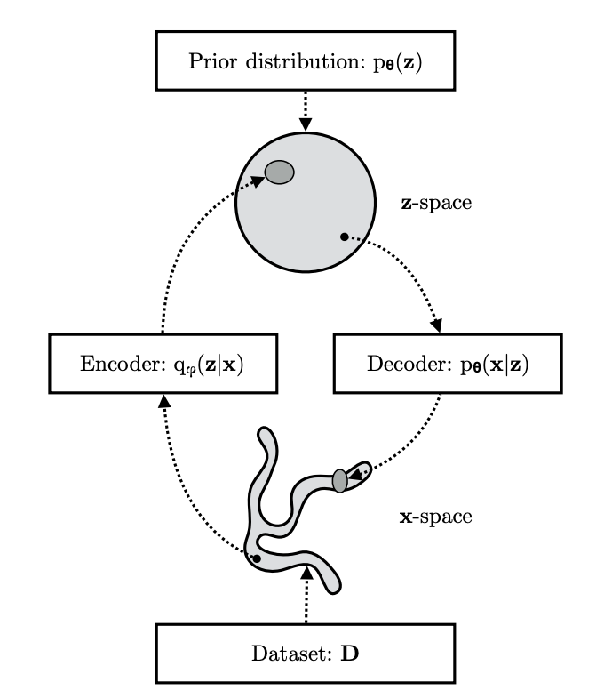
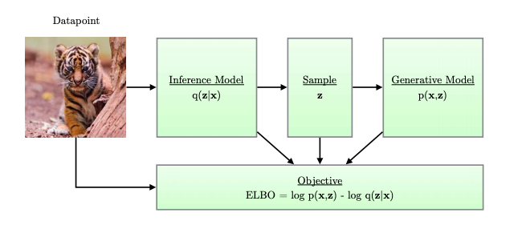

VAE Architecture#
The ‘right’ latent space is the one that makes the distribution \(p(\mathbf z| \mathbf \theta)\) the most likely to produce \(\mathbf x\). We are therefore introducing a stage that complements the aforementioned generative model or decoder given by \(p(\mathbf x| \mathbf z ; \mathbf \theta) p(\mathbf z | \theta)\).
This stage is called the recognition model or encoder and is given by \(p(\mathbf z| \mathbf x ; \mathbf \theta)\). The premise is this: the posterior \(p(\mathbf z | \mathbf x ; \mathbf \theta)\) will result into a much more meaningful and compact latent space \(\mathbf z\) than the prior \(p(\mathbf z | \mathbf \theta)\). This encoding though, calls for sampling from a posterior that is itself intractable. We then need to use an approximation to such distribution: \(q(\mathbf z| \mathbf x ; \mathbf \phi)\) and we call this the inference model that approximates the recognition model and help us optimize the marginal likelihood.
The VAE encoder-decoder spaces are clearly shown below. The picture shows the more compact space that is defined by the encoder.
 VAE spaces and distributions (from here)
The architecture of VAE includes four main components as shown below:
 VAE Architecture (from here)
Similar to the generative model, the inference model can be, in general, a PGM of the form:
and this, similarly to the generative model, can be parametrized with a \(DNN_{enc}(\phi)\). More specifically we obtain the approximation using the following construction:
The \(DNN_{enc}\) implements amortized variational inference, that is, it estimates the posterior parameters over a batch of datapoints and this offers significant boost in the parameter learning.
During the treatment of entropy, we have met the concept of relative entropy or KL divergence that measures the “distance” between two distributions referenced on one of them.
We will use KL divergence to obtain a suitable loss function that will be used in the optimization of this approximation via the \(DNN_{enc}\) network. Ultimately we are trying to minimize the KL divergence between the true posterior \(p(\mathbf z| \mathbf x ; \mathbf \theta)\) and the approximate posterior \(q(\mathbf z | \mathbf x ; \mathbf \phi)\)
The bracketed \(\mathcal L(q, \phi)\) quantity is called Evidence Lower Bound and is a functional of the distribution \(q\) and a function of the parameters \(\phi\). Why its a lower bound of the log-likelihood (evidence) function \(\log p(\mathbf x)\) and why its a useful quantity to consider?
Answering the last question first, we maximize the likelihood by effectively maximizing the \(\mathcal L(q, \phi, \theta)\) since \(KL(q(\mathbf z | \mathbf x ; \mathbf \phi) || p(\mathbf z | \mathbf \theta)) \ge 0\) by definition with zero only when \(q(\mathbf z | \mathbf x ; \mathbf \phi) = p(\mathbf z | \mathbf \theta))\). Since
$\(\mathcal L(q, \phi, \theta) = \log p(\mathbf x) - KL(q(\mathbf z | \mathbf x ; \mathbf \phi) || p(\mathbf z | \mathbf \theta)) \le \log p(\mathbf x)\)$. This is illustrated bellow:
 KL represents the tightness of the ELBO bound - From Bishop’s book
KL represents the tightness of the ELBO bound - From Bishop’s book
As the figure above shows \(KL(q(\mathbf z | \mathbf x ; \mathbf \phi) || p(\mathbf z | \mathbf \theta))\) represents the tightness of the ELBO \(\mathcal L(q, \phi, \theta)\) since the closest the approximation becomes the smaller the gap between ELBO and the log likelihood. Maximizing the ELBO withe respect to \((\phi, \theta)\) will achieve “two birds with one stone” situation: it will maximize the marginal log likelihood that is used for data generation and minimize the KL divergence improving the approximation in the encoder. On top of that, the ELBO allows joint optimization with respect to all the parameters \(\phi\) and \(\theta\) using SGD. This is described via an example in the ELBO section.